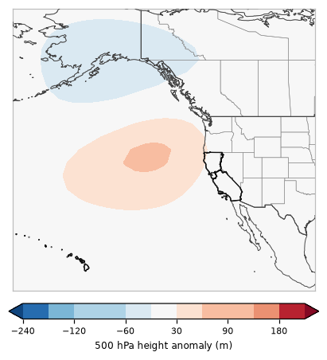

One of 6 recurring 500 hPa patterns over the eastern Pacific and western U.S. in California's fire seasons, 2001–2025 · 31% of season days

This pattern has a ridge (heights +65 m above normal) centered near the northeast Pacific and a trough (-58 m) centered near the Gulf of Alaska, with near-normal heights over California.
Documented fire-weather patterns it goes with: Northern California northeast foehn winds (×1.5 as common on those days). How these line up with CEFA and the Synthesis of Knowledge of Extreme Fire Behavior.
Pyroconvection (seven studied California fires, 262 fire days): 3 pyroCb and 8 pyroCu days in Regime A (pyroCb days ×1.0 as common as on all study days). Which days.
The map is the average 500 hPa (~18,000 ft) height anomaly over every day assigned to this regime: red = higher than normal (ridge), blue = lower than normal (trough). Upper-level ridges bring sinking, warming, drying air; troughs bring cooler air, onshore flow and the chance of showers or thunderstorms, and the wind shifts and dry northerly flow that can follow them.
Share of each month's days (2001–2025) in Regime A.
Odds of a fire day with at least this much satellite-mapped growth, compared with the usual odds for the same time of year.
| Region | ≥1,000 ac | ≥5,000 ac | ≥10,000 ac |
|---|---|---|---|
| Northern California | ×1.03 | ×0.94 | ×1.04 |
| Southern California | ×1.10 | ×0.98 | ×0.90 |
| California | ×1.07 | ×1.02 | ×1.04 |
×1.00 = no different from usual; ×1.5 = half again as likely; ×0.6 = 40% less likely. A single 500 hPa pattern is only a modest signal on its own: lightning, wind events and fuel dryness matter a lot.
| Fire day | Acres (CA) | Largest fires that day |
|---|---|---|
| 2007-10-21 | 185,660 | WITCH (73,136 ac), HARRIS (33,839 ac), BUCKWEED (32,512 ac) |
| 2021-08-05 | 140,156 | DIXIE (105,287 ac), ANTELOPE (14,812 ac), MONUMENT (13,032 ac) |
| 2021-08-16 | 138,073 | DIXIE (48,830 ac), MCFARLAND (39,836 ac), MONUMENT (20,878 ac) |
| 2020-09-27 | 132,745 | GLASS (41,076 ac), AUGUST COMPLEX (40,772 ac), ZOGG (39,500 ac) |
| 2021-08-04 | 122,660 | DIXIE (75,819 ac), ANTELOPE (22,062 ac), HAYPRESS (RIVER COMPLEX) (9,808 ac) |
| 2008-07-08 | 72,481 | IRON (IRON & ALPS COMPLEXES) (10,551 ac), LONG BRANCH-JACK (BTU LIGHTNING COMPLEX) (9,738 ac), BLUE 2 (KLAMATH THEATER) (9,247 ac) |
| 2012-08-13 | 69,293 | RUSH (53,911 ac), WILSON (VALLECITO LIGHTNING COMPLEX) (3,850 ac), CHIPS (3,284 ac) |
| 2012-08-16 | 66,190 | RUSH (63,138 ac), STEWART (VALLECITO LIGHTNING COMPLEX) (1,213 ac), CHIPS (900 ac) |
| 2018-08-03 | 65,214 | RANCH (MENDOCINO COMPLEX) (41,338 ac), CARR (8,948 ac), FERGUSON (5,738 ac) |
| 2017-12-04 | 63,056 | THOMAS (63,056 ac) |
| 2021-08-29 | 61,962 | CALDOR (23,720 ac), DIXIE (19,326 ac), HAYPRESS (RIVER COMPLEX) (7,796 ac) |
| 2012-08-14 | 59,113 | RUSH (42,542 ac), WILSON (VALLECITO LIGHTNING COMPLEX) (4,277 ac), STEWART (VALLECITO LIGHTNING COMPLEX) (3,405 ac) |
3 of the study's 9 pyroCb days formed under Regime A:
PyroCu (fire-rooted tops −20 to −40 °C) under Regime A: 8 days (August Complex, Carr, Dixie).
Median 700 hPa moisture at the fire: 5.0 g/kg on pyroCb days, 3.5 g/kg on days with no deep plume cloud.
Under A, C or D, 700 hPa moisture at or above ~3.7 g/kg marked every studied pyroCb day (9/9) while flagging 43/186 days without deep plume cloud (fire by fire: 6/9 caught, 49/224 flagged). A pattern-level hint, weaker than the fire-power test on the pyroconvection page.
Seven studied California fires (2018–2021), GOES-classified and reviewed by eye. Pyroconvection under the scenarios.
% of all members (models weighted equally) in Regime A, by day.
| 10/17 | 10/18 | 10/19 | 10/20 | 10/21 | 10/22 | 10/23 | 10/24 | 10/25 | 10/26 | 10/27 | 10/28 | 10/29 | 10/30 | 10/31 |
|---|---|---|---|---|---|---|---|---|---|---|---|---|---|---|
| 0 | 48 | 0 | 0 | 81 | 6 | 8 | 9 | 19 | 20 | 8 | 4 | 5 | 17 | 12 |